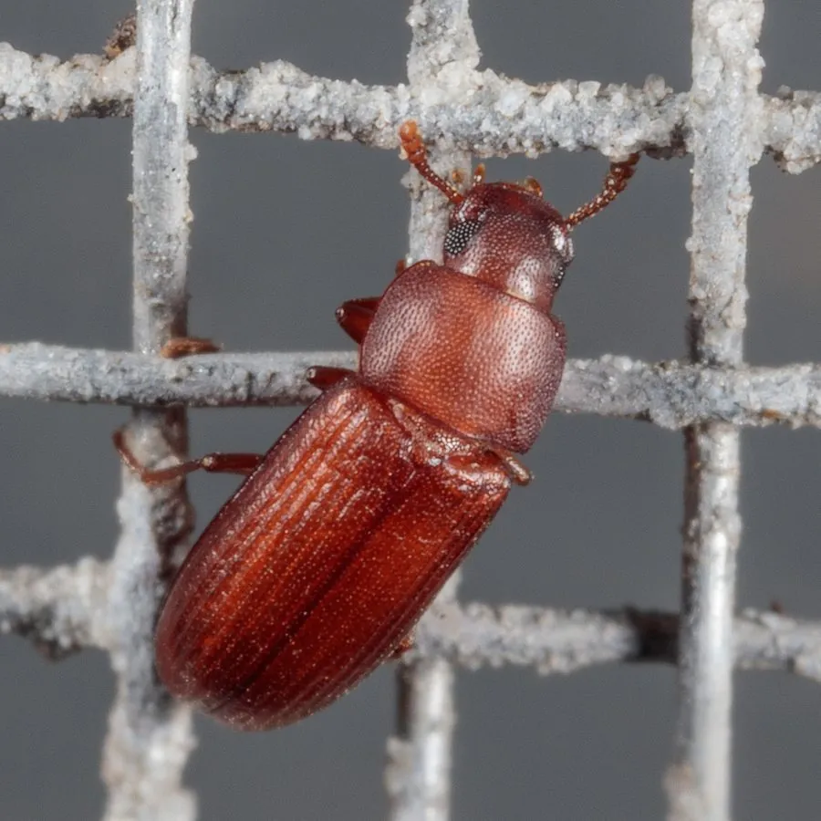

昆虫 · 动物界
赤拟谷盗 Tribolium castaneum

全球常见的储粮害虫，成虫红褐色、体型扁长，取食面粉和谷物，同时是遗传学研究中重要的模式昆虫。
- 分类
- 门节肢动物门纲昆虫纲目鞘翅目科拟步甲科属拟谷盗属
- 栖息环境
- 面粉厂、粮仓、食品加工厂、储粮容器与干燥食品环境
- 地理分布
- 全球分布，中国各地储粮和食品环境常见
- 保护级别
- IUCN 暂无评估；中国常见储粮害虫，无保护级别
物种志
赤拟谷盗体长 3–4 毫米，身体呈红褐色至黑褐色，扁平细长，鞘翅上有纵向刻点条纹，头部较小，触角呈棍棒状，足短而善于爬行。它善飞，受惊时会分泌有异味的液体。
它呈世界性分布，在中国各地的面粉厂、粮仓和食品加工场所中常见，主要危害面粉、玉米粉、麦麸、谷物和干果。成虫和幼虫都在粮食和面粉中取食、繁殖，严重时粮食结块、变色并产生异味。它一年可发生多代，在温暖环境中约 3–4 周即可完成一代，雌虫可产卵 300–500 枚。除了农业危害，赤拟谷盗还是重要的模式生物，因其基因组测序完成、易于饲养，被广泛用于遗传学、发育生物学和进化研究；防治上应保持储粮环境清洁干燥、低温储藏并定期检查。
形态与习性
- 食性面粉、麦麸、谷物和干果
- 体长3–4 mm
- 寿命成虫约 3–6 个月，一年可发生多代
- 繁殖卵生，雌虫产卵 300–500 枚，一代约 3–4 周
- 活动节律昼夜活动，温暖时繁殖迅速
- 科学价值遗传学和发育生物学研究的重要模式昆虫
趣味知识
- 赤拟谷盗不仅是储粮害虫，也是遗传学研究的经典模式生物。
- 它被惊扰时会分泌带有异味的液体，使受污染的面粉产生异味。
- 在温暖环境中，赤拟谷盗约 3–4 周就能完成一代。